3. Model Assumptions
This reading:
Multilevel model assumptions: random effects can be thought of as another level of residual!
Influence in multilevel models: influential observations and influential groups.
MLM Assumptions & Diagnostics
Hopefully by now you are getting comfortable with the idea that all our models are simplifications, and so there is always going to be some difference between a model and real-life. This difference - the residual - will ideally just be randomness, and we assess this by checking for systematic patterns in the residual term.
Not much is different in the multilevel model - we simply now have “residuals” on multiple levels. We are assuming that our group-level differences represent one level of randomness, and that our observations represent another level. We can see these two levels in Figure 1, with the group-level deviations from the fixed effects (\(\color{orange}{\zeta_{0i}}\) and \(\color{orange}{\zeta_{1i}}\)) along with the observation-level deviations from that groups line (\(\varepsilon_{ij}\)).
Let’s suppose we are studying employee job satisfaction at the university. We have 399 employees from 25 different departments, and we got them to fill in a job satisfaction questionnaire, and got information on what their payscale was. We have also taken information from the national student survey on the level of student satisfaction for each department.
Each datapoint here represents an individual employee, and these employees are grouped into departments.
library(tidyverse)
library(lme4)
jsuni <- read_csv("https://uoepsy.github.io/data/msmr_nssjobsat.csv")
head(jsuni)# A tibble: 6 × 5
NSSrating dept payscale jobsat jobsat_binary
<dbl> <chr> <dbl> <dbl> <dbl>
1 4.8 International Public Health Policy 6 19 1
2 6.7 Language Sciences 8 17 0
3 6.9 BSc Hons (Royal (Dick) Sch of Veterin… 7 17 0
4 6.3 Veterinary Sciences 7 16 0
5 4.8 African Studies 9 18 0
6 4 Electronics 7 18 0We had a model that included by-participant random effects, such as:
jsmod <- lmer(jobsat ~ 1 + payscale + NSSrating +
(1 + payscale| dept),
data = jsuni)The equation for such a model would take the following form:
\[
\begin{align}
\text{For Employee }j\text{ from Department }i& \\
\text{Level 1 (Employee):}& \\
\text{Stress}_{ij} &= b_{0i} + b_{1i} \cdot \text{Payscale}_{ij} + \epsilon_{ij} \\
\text{Level 2 (Department):}& \\
b_{0i} &= \gamma_{00} + \zeta_{0i} + \gamma_{01} \cdot \text{NSSrating}_i\\
b_{1i} &= \gamma_{10} + \zeta_{1i} \\
& \qquad \\
\text{Where:}& \\
& \begin{bmatrix} \zeta_{0i} \\ \zeta_{1i} \end{bmatrix}
\sim N
\left(
\begin{bmatrix} 0 \\ 0 \end{bmatrix},
\begin{bmatrix}
\sigma_0 & \rho \sigma_0 \sigma_1 \\
\rho \sigma_0 \sigma_1 & \sigma_1
\end{bmatrix}
\right) \\
& \qquad \\
& \varepsilon_{ij} \sim N(0,\sigma_\varepsilon)
\end{align}
\]
Note that this equation makes clear the distributional assumptions that our models make. It states the residuals \(\varepsilon\) are normally distributed with a mean of zero, and it says the same thing about our random effects!
Level 1 residuals
We can get the level 1 (observation-level) residuals the same way we used to do for lm() - by just using resid() or residuals(). Additionally, there are a few useful techniques for plotting these which we have listed below:
resid vs fitted
We can plot the residuals vs fitted model (just like we used to for lm()), and assess the extend to which the assumption holds that the residuals are zero mean. (we want the blue smoothed line to be fairly close to zero across the plot)
# "p" below is for points and "smooth" for the smoothed line
plot(jsmod, type=c("p","smooth"))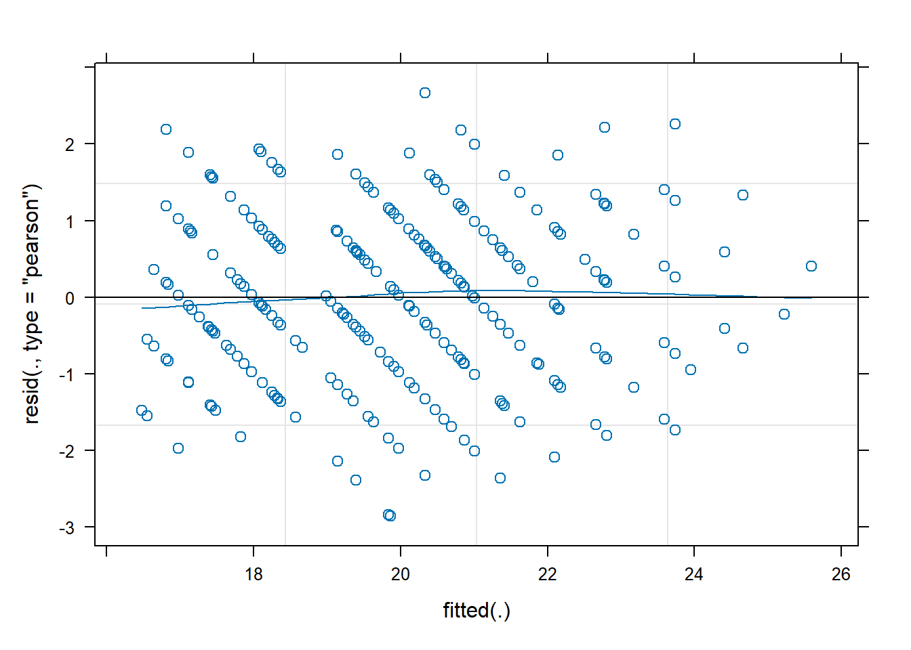
scale-location
Again, like we can for lm(), we can also look at a scale-location plot. This is where the square-root of the absolute value of the residuals is plotted against the fitted values, and allows us to more easily assess the assumption of constant variance.
(we want the blue smoothed line to be close to horizontal across the plot)
plot(jsmod,
form = sqrt(abs(resid(.))) ~ fitted(.),
type = c("p","smooth"))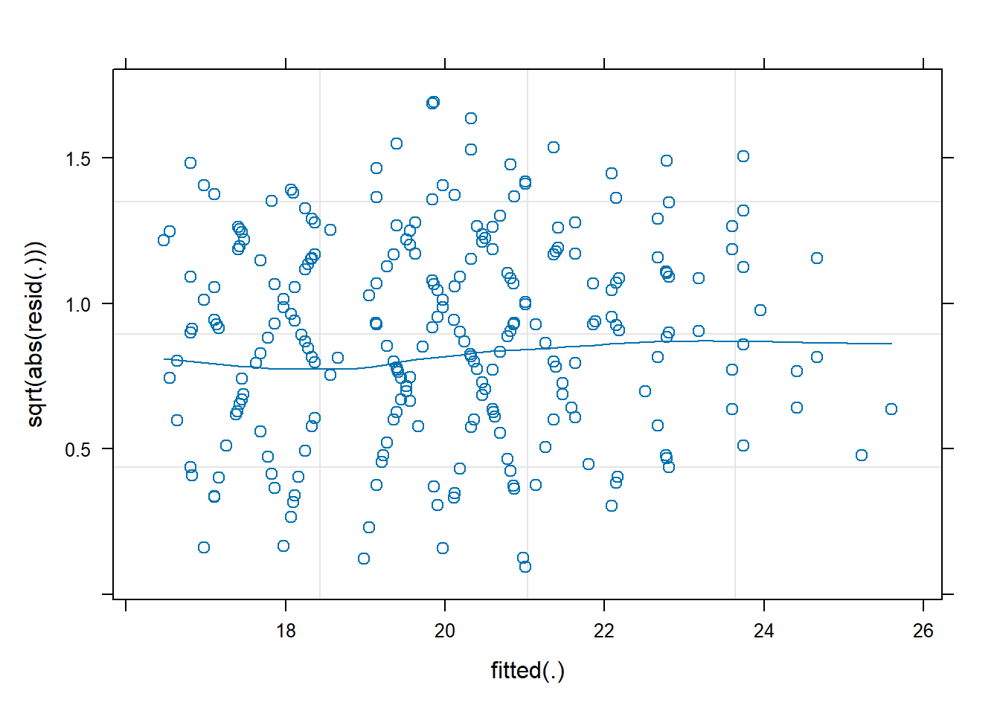
facetted plots
We can also plot these “resid v fitted” and “scale-location” plots for each cluster, to check that our residual mean and variance is not related to the clusters:
plot(jsmod,
form = resid(.) ~ fitted(.) | dept,
type = c("p"))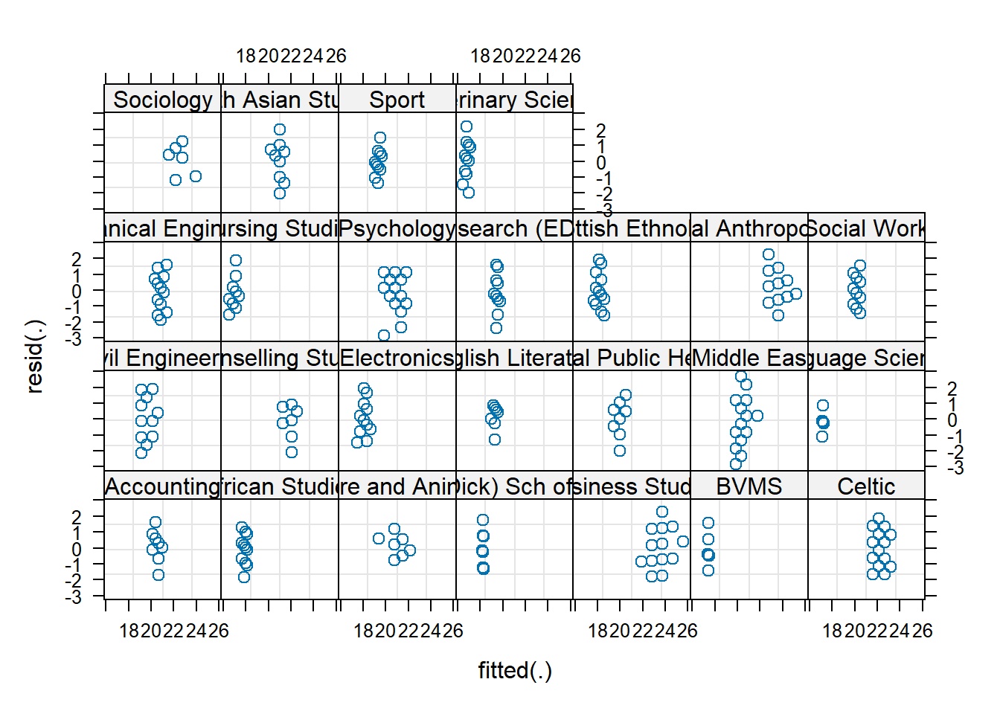
plot(jsmod,
form = sqrt(abs(resid(.))) ~ fitted(.) | dept,
type = c("p"))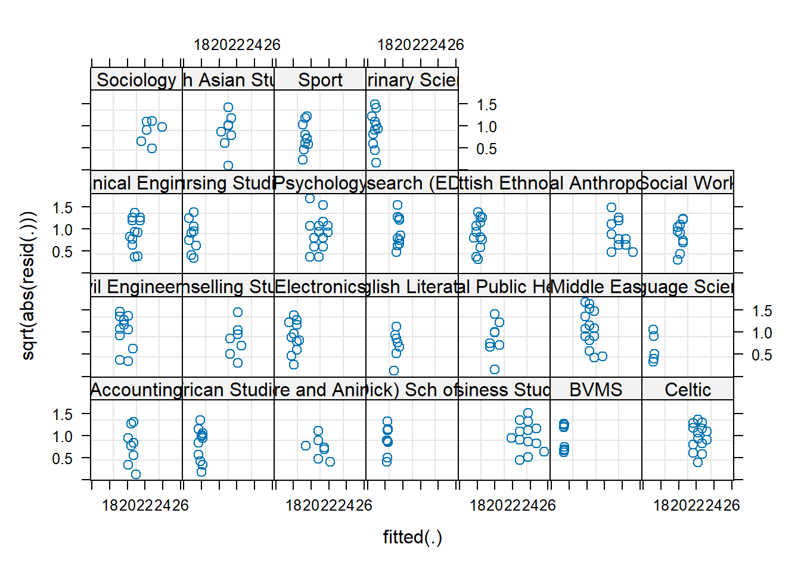
residual normality
We can also examine the normality the level 1 residuals, using things such as histograms and QQplots:
(we want the datapoints to follow close to the diagonal line)
qqnorm(resid(jsmod)); qqline(resid(jsmod))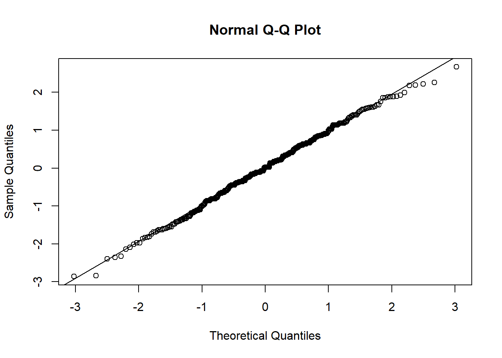
hist(resid(jsmod))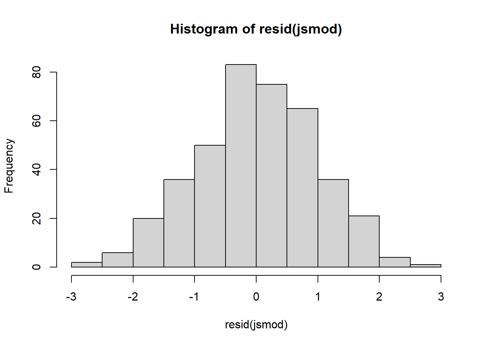
Level 2+ residuals
The second level of residuals in the multilevel model are actually just our random effects! We’ve seen them already whenever we use ranef()!
To get out these we often need to do a bit of indexing. ranef(model) will give us a list with an item for each grouping. In each item we have a set of columns, one for each thing which is varying by that grouping.
Below, we see that ranef(jsmod) gives us something with one entry, $dept, which contains 2 columns (the random intercepts and random slopes of payscale):
ranef(jsmod)$dept
(Intercept) payscale
Accounting -0.03045458 -0.19259376
Architecture and Landscape Architecture 0.29419381 -0.35855884
Art -0.29094345 0.15293285
Business Studies -0.27858102 0.18008149
... ... ... So we can extract the random intercepts using ranef(jsmod)$dept[,1].
Again, we want normality of the random effects, so we can make more histograms or qqplots, for both the random intercepts and the random slopes:
e.g., for the random intercepts:
qqnorm(ranef(jsmod)$dept[,1]);qqline(ranef(jsmod)$dept[,1])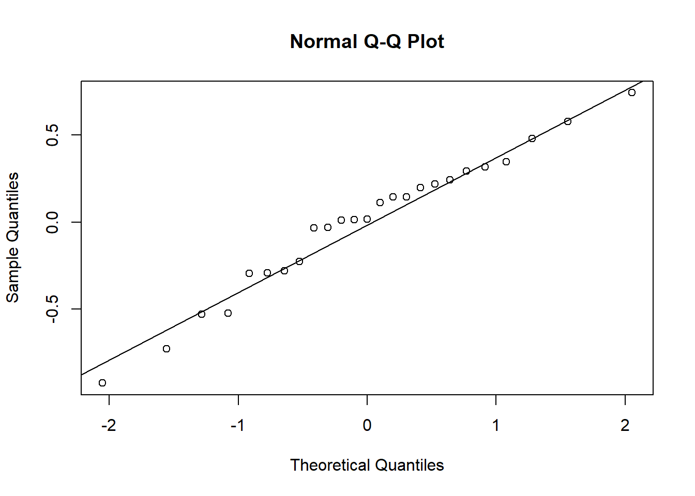
and for the random slopes:
qqnorm(ranef(jsmod)$dept[,2]);qqline(ranef(jsmod)$dept[,2])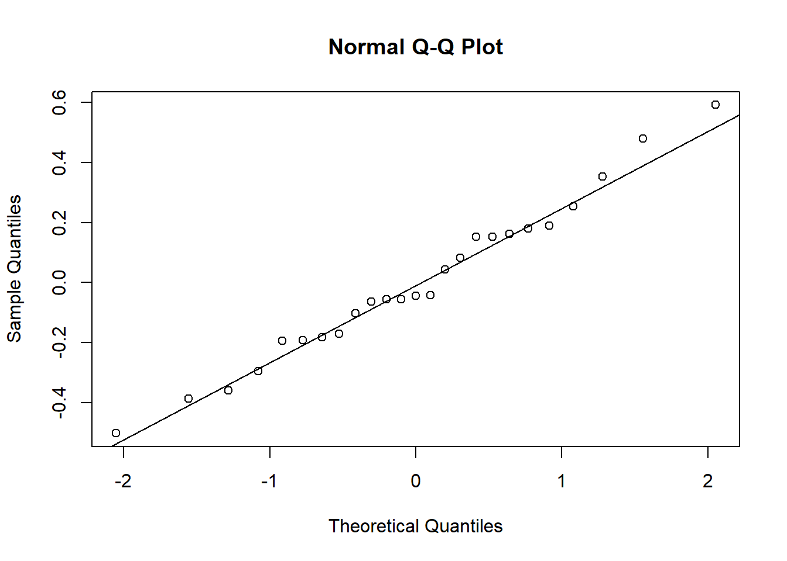
model simulations
Sometimes, a good global assessment of your model comes from how good a representation of the observed data it is. We can look at this in a cool way by simulating from our model a new set of values for the outcome. If we do this a few times over, and plot each ‘draw’ (i.e. set of simulated values), we can look at how well it maps to the observed set of values:
One quick way to do this is with the check_predictions() function from the performance package:
library(performance)
check_predictions(jsmod, iterations = 200)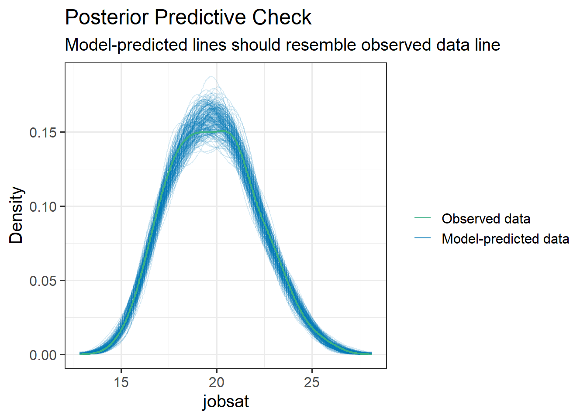
optional: doing it yourself
Doing this ourself gives us a lot more scope to query differences between our observed vs model-predicted data.
The simulate() function will simulate response variable values for us.
The re.form = NULL bit is saying to include the random effects when making simulations (i.e. use the information about the specific clusters we have in our data). If we said re.form = NA it would base simulations on a randomly generated set of clusters with the associated intercept and slope variances estimated by our model.
modsim <- simulate(jsmod, nsim = 200, re.form=NULL)To get this plotted, we’ll have to do a bit of reworking, because it gives us a separate column for each draw. So if we pivot them longer we can make a density plot for each draw, and then add on top of that our observed scores:
# take the simulations
modsim |>
# pivot "everything()" (useful function to capture all columns),
# put column names into "sim", and the values into "value"
pivot_longer(everything(), names_to="sim",values_to="value") |>
# plot them!
ggplot(aes(x=value))+
# plot a different line for each sim.
# to make the alpha transparency work, i need to use
# geom_line(stat="density") rather than
# geom_density() (for some reason alpha applies to fill here)
geom_line(aes(group=sim), stat="density", alpha=.1,
col="darkorange") +
# finally, add the observed scores!
geom_density(data = jsuni, aes(x=jobsat), lwd=1)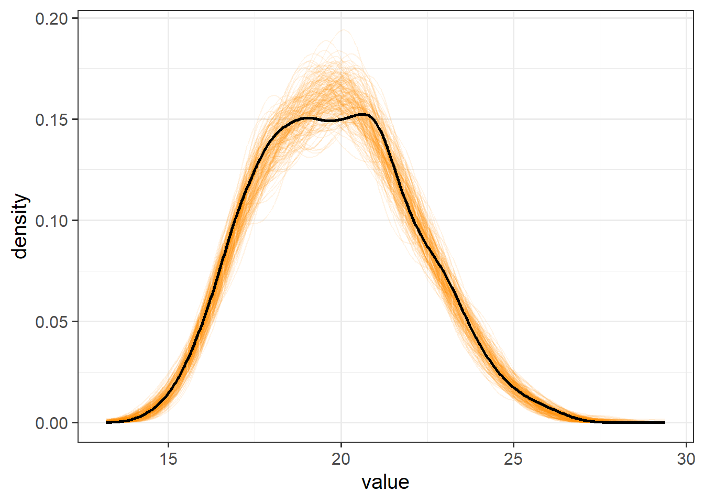
However, we can also go further! We can pick a statistic, let’s use the IQR, and see how different our observed IQR is from the IQRs of a series of simulated draws.
Here are 1000 simulations. This time I don’t care about simulating for these specific clusters, I just want to compare to random draws of clusters:
sims <- simulate(jsmod, nsim=1000, re.form=NA)The apply() function (see also lapply, sapply ,vapply, tapply) is a really nice way to take an object, and apply a function to it. The number 2 here is to say “do it on each column”. If we had 1 it would be saying “do it on each row”.
This gives us the IQR of each simulation:
simsIQR <- apply(sims, 2, IQR)We can then ask what proportion of our simulated draws have an IQR smaller than our observed IQR? If the answer is very big or very small it indicates our model does not very represent this part of reality very well.
mean(IQR(jsuni$jobsat)>simsIQR)[1] 0.451Influence
Just like individual observations can exert influence on a single level linear model fitted with lm(), they can influence our multilevel models too. Just like our assumptions now apply at multiple levels, influence can happen at multiple levels too.
An individual observation might influence our model (as in Figure 2), but so might an entire cluster (Figure 3).
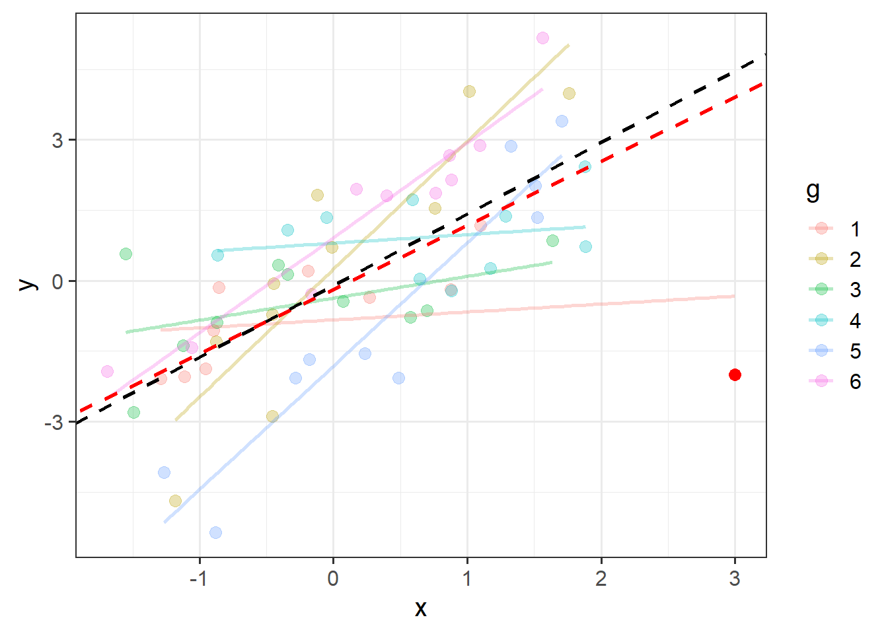
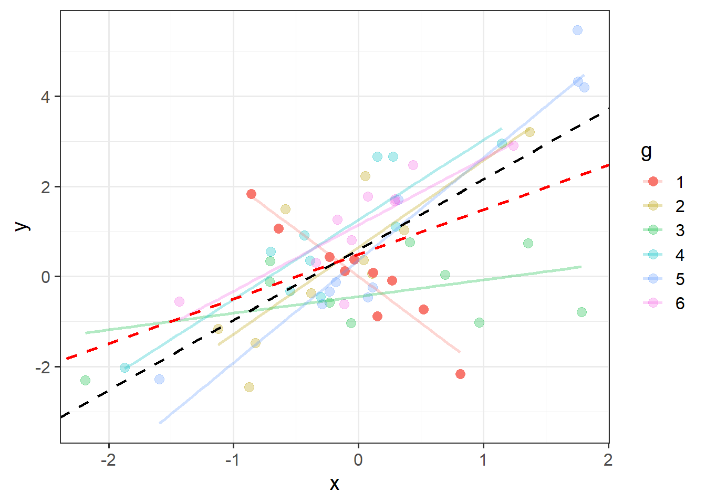
There are two main packages for examining influence in multilevel models, HLMdiag and influence.ME that work by going through and deleting each observation/cluster and examining how much things change. HLMdiag works for lmer() but not glmer(), but provides a one-step approximation of the influence, which is often quicker than the full refitting process. The influence.ME package will be slower, but works for both lmer() and glmer().
HLMdiag
We use this package by creating an object using hlm_influence(), specifying the level at which we want to examine influence.
In this case, level = 1 means we are looking at the influence of individual observations, and level = "dept" specifies that we are looking at the influence of the levels in the dept variable.
The approx = TRUE part means that we are asking for the approximate calculations of influence measures, rather than asking for it to actually iteratively delete each observation and re-fit the model.
library(HLMdiag)
inf1 <- hlm_influence(model = jsmod, level = 1, approx = TRUE)
inf2 <- hlm_influence(model = jsmod, level = "dept", approx = TRUE)We can then plot metrics such as the cooks distance for each of these. Note that the “internal” cutoff here adds a red line to the plots, and is simply calculated as the 3rd quartile plus 3 times the IQR, thereby capturing a relative measure of outlyingness.
As with the measures of influence for lm(), such cutoffs are somewhat arbitrary, and so should be interpreted with caution.
dotplot_diag(inf1$cooksd, cutoff = "internal")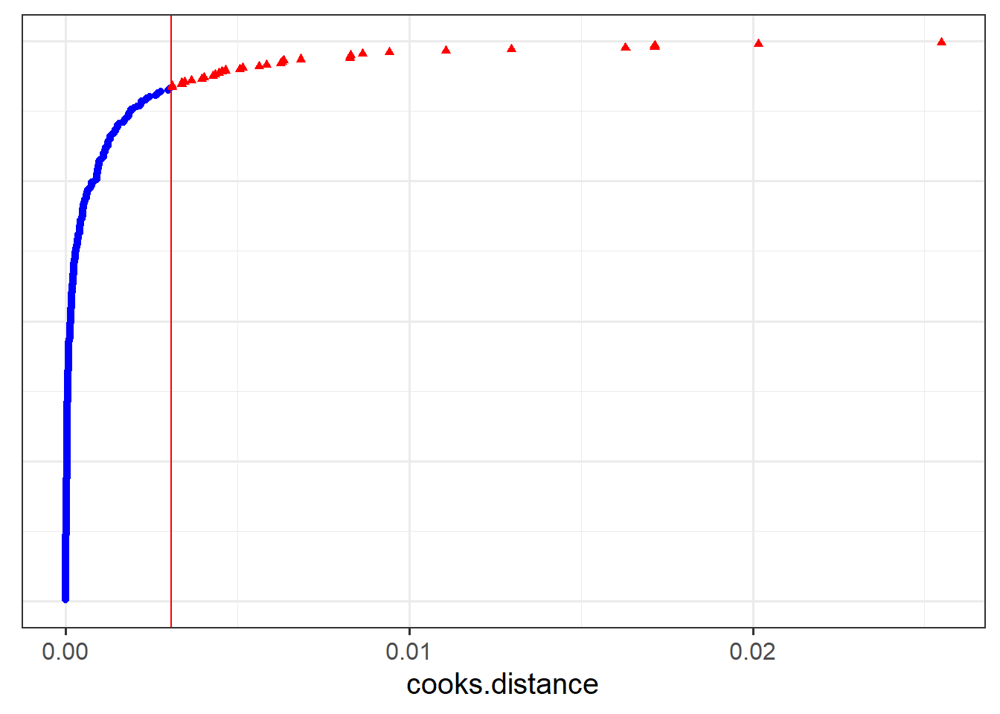
dotplot_diag(inf2$cooksd,
index = inf2$dept, cutoff = "internal")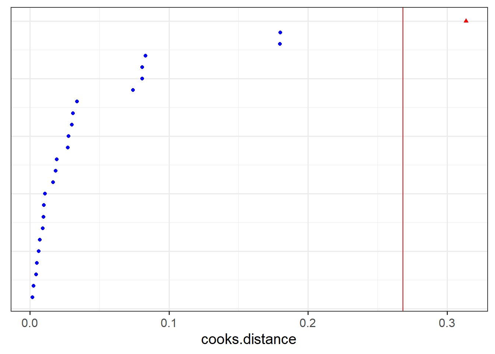
influence.ME
We use this package by creating an object using influence(), specifying the level at which we want to examine influence.
In this case, obs = TRUE means we are looking at the influence of individual observations, and group = "dept" specifies that we are looking at the influence of the levels in the dept variable.
library(influence.ME)
inf1 <- influence(model = jsmod, obs = TRUE)
inf2 <- influence(model = jsmod, group = "dept")We can then plot metrics such as the cooks distance for each of these:
plot(inf1, which = "cook", sort=TRUE)
plot(inf2, which = "cook", sort=TRUE)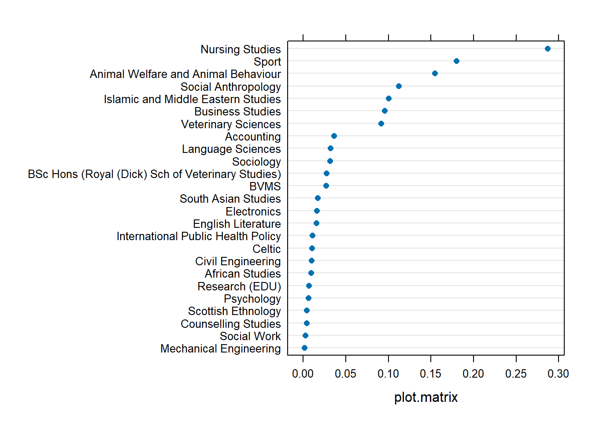
To conduct a sensitivity analysis of our models robustness to the inclusion of such influential observations, we would simply fit our model with and without that observation/cluster, and examine if/how our conclusions would change.
For instance, to refit our model without employees of the ‘Nursing Studies’ department:
jsmod_NS <- lmer(jobsat ~ 1 + payscale + NSSrating +
(1 + payscale| dept),
data = jsuni |>
filter(dept!="Nursing Studies"))The tidy() function from broom.mixed is a quick way to print out parameters from each model:
tidy(jsmod)# A tibble: 7 × 6
effect group term estimate std.error statistic
<chr> <chr> <chr> <dbl> <dbl> <dbl>
1 fixed <NA> (Intercept) 14.5 0.998 14.6
2 fixed <NA> payscale 0.336 0.0800 4.21
3 fixed <NA> NSSrating 0.428 0.132 3.25
4 ran_pars dept sd__(Intercept) 0.934 NA NA
5 ran_pars dept cor__(Intercept).payscale -0.494 NA NA
6 ran_pars dept sd__payscale 0.294 NA NA
7 ran_pars Residual sd__Observation 1.02 NA NA tidy(jsmod_NS)# A tibble: 7 × 6
effect group term estimate std.error statistic
<chr> <chr> <chr> <dbl> <dbl> <dbl>
1 fixed <NA> (Intercept) 15.4 0.999 15.5
2 fixed <NA> payscale 0.324 0.0806 4.02
3 fixed <NA> NSSrating 0.318 0.132 2.42
4 ran_pars dept sd__(Intercept) 0.516 NA NA
5 ran_pars dept cor__(Intercept).payscale -0.594 NA NA
6 ran_pars dept sd__payscale 0.292 NA NA
7 ran_pars Residual sd__Observation 1.02 NA NA Optional Extra: The DHARMa Package
DHARMa is a cool package that attempts to construct easy to interpret residuals for models of various families (allowing us to construct useful plots to look at for binomial and poisson models fitted with glmer()).
It achieves this by doing lots of simulated draws from the model, and for each observation \(i\) it asks where the actual value falls in relation to the simulated values for that observation (i.e. that combination of predictors). If the observed is exactly what we would expect, it would fall right in the middle taking a value of 0.5 (0.5 of the simulated distribution for observation \(i\) will be below and 0.5 will be below). If all the simulated values fall below the observed value, it would take the value 1. The DHARMa package has a good explanation of how this works in more detail (https://cran.r-project.org/web/packages/DHARMa/vignettes/DHARMa.html), but it can be done for lmer(), glmer() and more.
Here’s a binomial logistic model, where instead of a job-satisfaction score, we have a simple yes/no for job satisfaction:
jsmod2 <- glmer(jobsat_binary ~ 1 + payscale + NSSrating +
(1 + payscale | dept),
data = jsuni, family=binomial)The DHARMa package works by first getting the simulated residuals
library(DHARMa)
msim <- simulateResiduals(fittedModel = jsmod2)If our model is correctly specified, then the DHARMa residuals we would expect to be uniform (i.e. flat), and also uniform distributed across any predictor.
It offers some nice ways to assess this, by plotting the observed vs expected distribution on a QQplot:
plotQQunif(msim)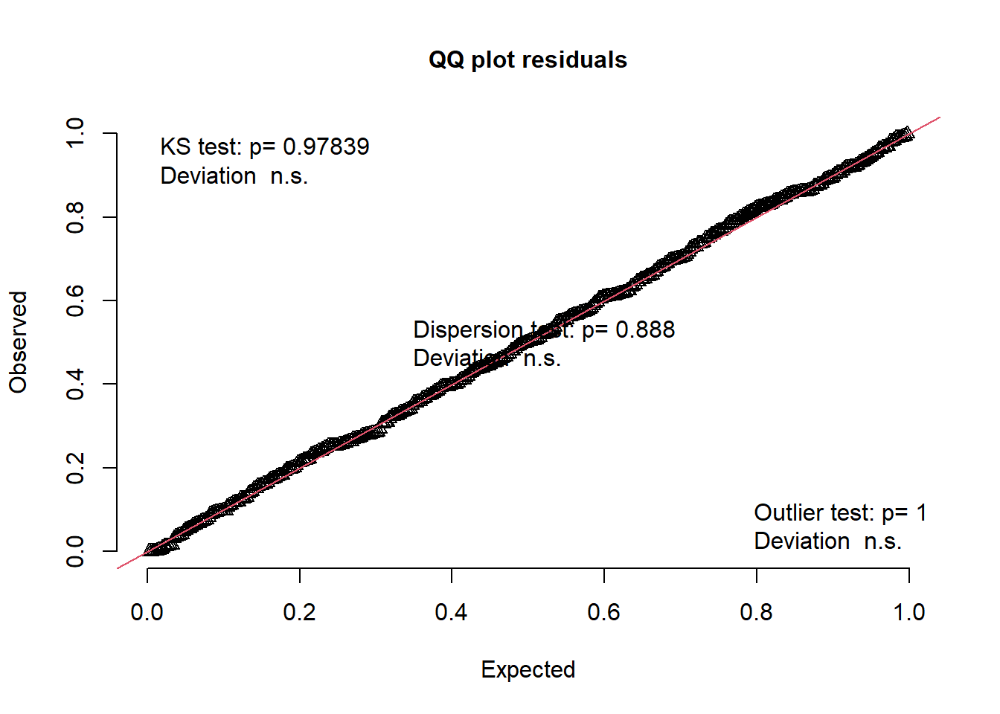
And it plots the residuals against the fitted, while adding lines for quantiles of the distribution. If the middle one is flat, it equates to the “zero mean” assumption, and if the outer two are flat it equates to our “constant variance” assumption.
plotResiduals(msim)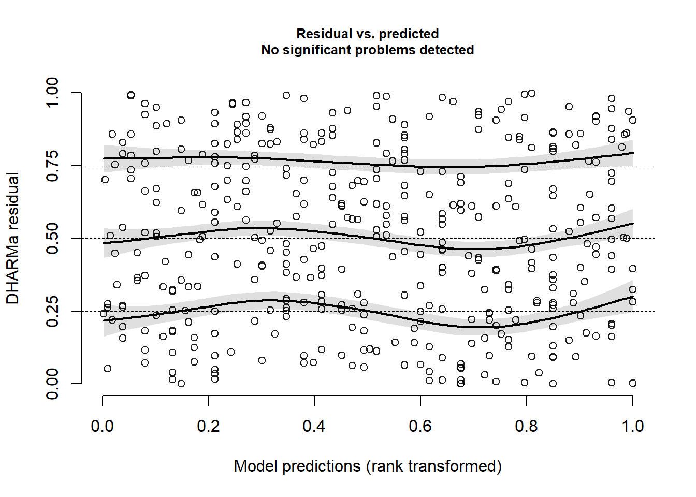
We can also plot the residuals against specific predictors:
plotResiduals(msim, form = jsuni$NSSrating)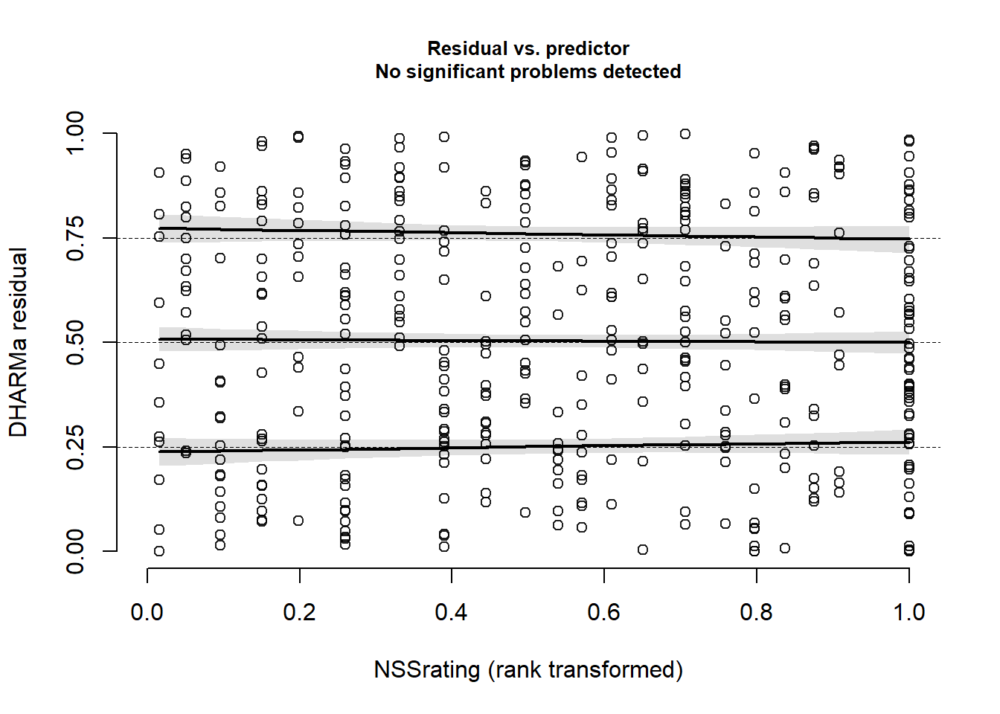